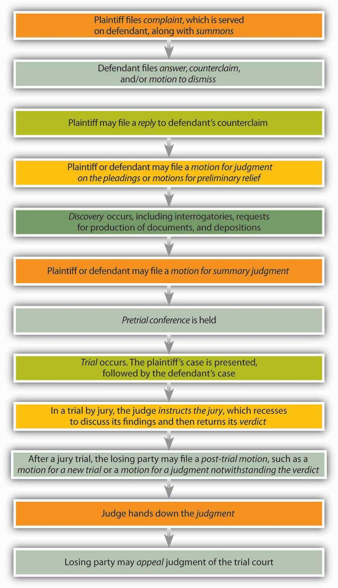
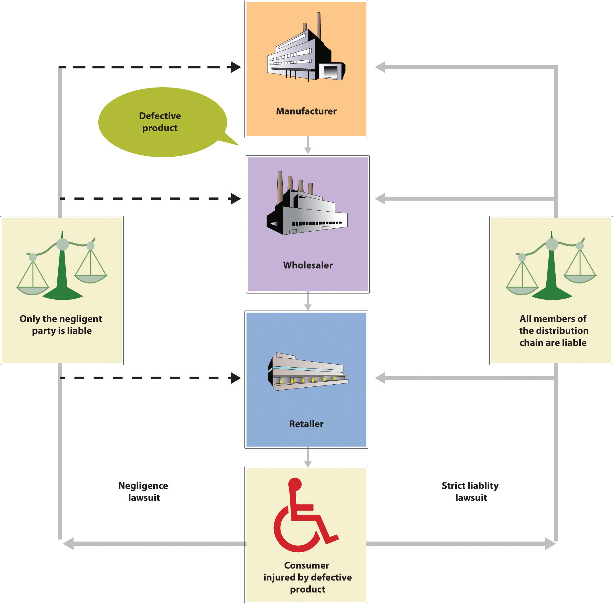
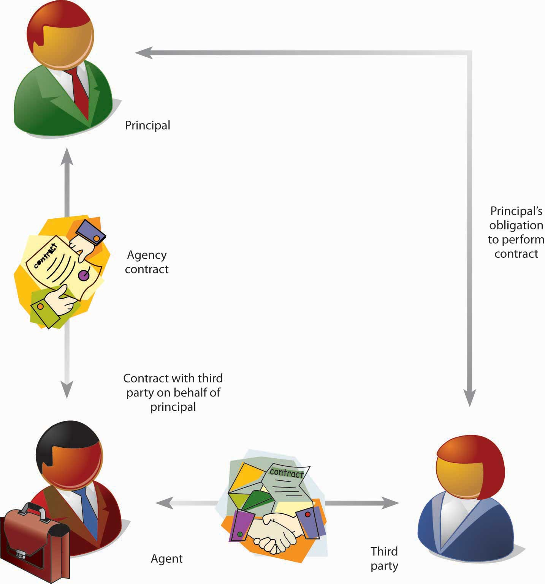
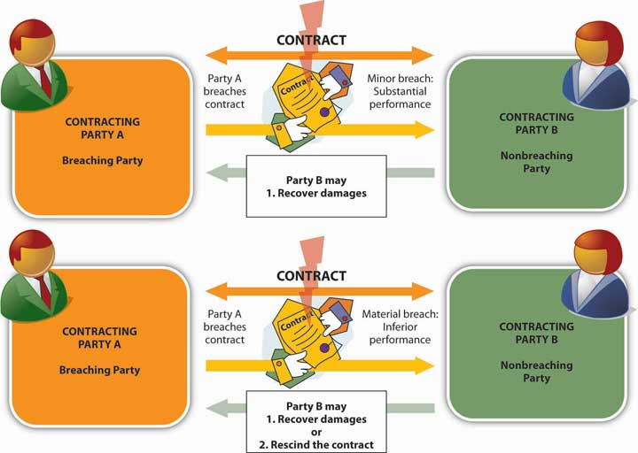
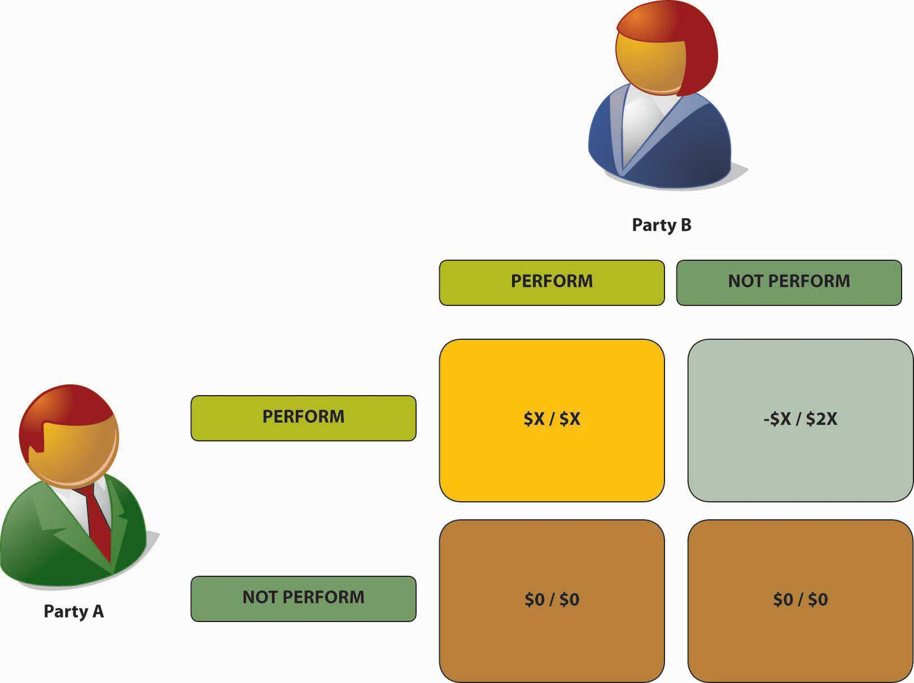
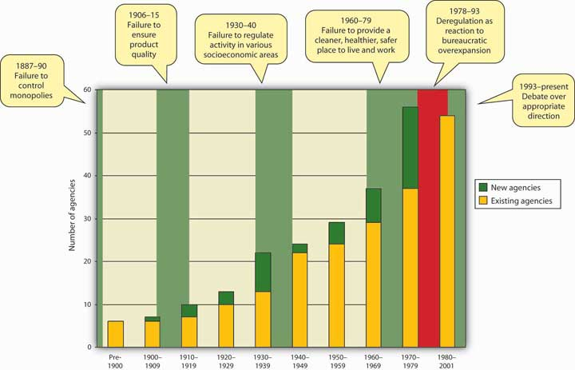
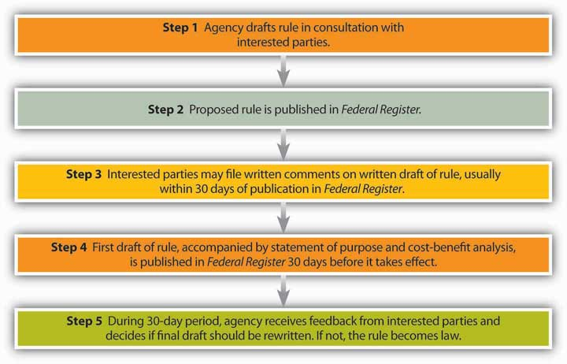

You may or may not have heard of George McGovern.This vignette is based on the following sources: George McGovern, “What I Know Now: Nibbled to Death,” Inc, December 1993, http://www.inc.com/magazine/19931201/3809.html (accessed November 11, 2011); McGovern, “Freedom Means Responsibility,” Wall Street Journal Online, March 7, 2008, http://online.wsj.com/article/SB120485275086518279.html (accessed November 11, 2011); Jack Schultz, “Being a Small Business Owner Isn’t Easy—Ask George,” BoomtownUSA, February 28, 2005, http://boomtownusa.blogspot.com/2005_02_01_archive.html (accessed November 11, 2011). A professor of history in his home state of South Dakota, he was elected to Congress in 1956 and to the U.S. Senate in 1962. He was a prominent opponent of the war in Vietnam and became the Democratic Party nominee for president in 1972. His run for the presidency failed (he lost in a landslide), and he remained in the Senate until 1980. After more than a quarter century as a lawmaker, he then entered private life, serving on a few boards and giving a lot of lectures.
In 1988, McGovern and his wife Eleanor decided to go into business, so they purchased a small hotel in the city of Stratford, Connecticut. At first, the onetime politician was enlightened by life as a small business owner. “I wish I’d done this before I’d run for president,” he said in early 1990, “It would have given me insight into the anxiety any independent businessman…must have….Now I’ve had to meet a payroll every week. I’ve got to pay the bank every month. I’ve got to pay the state of Connecticut taxes….It gives you a whole new perspective on what other people worry about.”
Before the end of the year, the Stratford Inn went bankrupt and McGovern’s otherwise educational venture into the world of small-business ownership had come to an abrupt end. What happened? McGovern observed in retrospect that the terms of his lease weren’t particularly good and that New England was on the verge of severe recession just as he was starting up his enterprise. But the knockout blow, he maintains, was delivered in the legal arena. During McGovern’s tenure as owner, the Stratford was sued twice under laws governing premises liabilityThe duty of innkeepers to take reasonable care in preventing customers and third parties from being injured on their property.—the duty of innkeepers to take reasonable care in preventing customers and third parties from being injured on their property. There’s a subcategory called “slip-and-fall,” laws because slipping and falling are at the heart of so many premises-liability lawsuits.
In McGovern’s case, one lawsuit actually did involve a slip and fall (and an allegedly serious injury) in the parking lot of the hotel. In the other incident, a patron got into a fight when he came out of the hotel bar and sued the Stratford for failure to provide adequate security. A security guard was in fact on duty, but McGovern argues that few small businesses can furnish the kind of protection needed to prevent fights outside a bar. Both lawsuits were dismissed, but, as McGovern points out, “not without a first-rate legal defense that did not come cheaply.”
In an article written for Inc. magazine a couple of years later, McGovern acknowledged a few more lessons from his brief experience as a small businessman: “I learned first of all that over the past 20 years, America has become the most litigious society in the world.” He acknowledged the rationale behind premises-liability laws, “but it does seem to me,” he suggested, “that not every accident or fall or misfortune is the fault of the business at which it occurs.” Recalling that the Stratford was also required to meet “fire regulations more appropriate to the Waldorf-Astoria,” McGovern went on to report the second lesson he learned as owner of the Stratford Inn: that “legislators and government regulators must more carefully consider the economic and management burdens we have been imposing on U.S. business.”
McGovern’s eyes, it seems, had been opened after forty months as a small-business proprietor, and in the aftermath, he narrowed his focus to two problem areas for the small-business owner trying to survive in the highly complex legal environment of the United States. The first area falls under the heading of administrative lawBody of law dealing with statutes and regulations related to the activities of administrative agencies.—law pertaining to rules set down by any of the numerous agencies and departments created to administer federal or local law. McGovern happily confirms his commitment to such worthy social goals as worker safety and a clean environment, but he’s also convinced that we can pursue these goals “and still cut down vastly on the incredible paperwork, the complicated tax forms, the number of tiny regulations, and the seemingly endless reporting requirements that afflict American business.”
He’s also targeted what he regards as unnecessary burdens placed on business by statutory lawBody of law made by legislative bodies.—laws enacted by legislative branches of government (such as the U.S. Congress, of which he was a member for nearly three decades). In particular, as a survivor of two premises-liability suits, McGovern has become an advocate of tort reformA movement to stem the swelling tide of personal-injury litigation in the United States.—a movement to stem the swelling tide of personal-injury litigation in the United States. Americans, he charges, “sue one another at the drop of a hat, [and] lawsuits without merit…are hurting both the economy and decency of our society.” Business suffers because businesses hold most of the insurance policies at which liability litigation is aimed. With each settlement, premiums surge, and many businesses, especially smaller ones, argues McGovern, “simply can’t pass such costs on to their customers and remain competitive or profitable….If I were back in the U.S. Senate or in the White House,” he concludes, “I would ask a lot of questions before I voted for any more burdens on the thousands of struggling businesses across the nation.”
In the eighteenth century, when the legal and regulatory environment of everything was a lot simpler than it is today, the great Irish satirist Jonathan Swift likened laws to cobwebs because they seem to stretch in every direction to catch innocent flies while failing utterly to stop wasps and other creatures responsible for much greater crimes against human comfort. Like George McGovern, many people no doubt find this comparison at least as true today as it was in Swift’s time. After all, in order to be law-abiding innkeepers (or just plain citizens), we must negotiate a vast web of constitutional law, federal law, regulatory law, and state and local law; criminal law, civil law, and common law; substantive law and procedural law; public law and private law; and business law, which includes contract law, product-liability law, patent law, consumer-protection law, environmental law, employment and labor law, insurance law, cyberlaw, agency law, and a host of other forms of law. In fact, being a truly law-abiding citizen is virtually out of the question. According to one estimate, the average American driver deserves ten speeding tickets a day. Other underpenalized violations range from stealing cable TV and scalping tickets to exhibitionism and illegal fishing and hunting.See Timothy Sexton, “Millions of Americans Break the Law Several Times a Day without Being Punished,” Associated Content, September 9, 2008, http://www.associatedcontent.com/article/979756/millions_of_americans_break_the_law.html (accessed November 12, 2011).
Perhaps, however, we should examine the issue of the laws in our lives from a more positive perspective. As a veteran lawmaker, for example, George McGovern certainly appreciates the value of lawBody of enforceable rules and principles of conduct., which is basically a body of enforceable rules and principles of conduct. Clearly, his criticisms are directed not at the existence of laws, but rather at certain facets of administrative and statutory law—in particular, the way specific statutes can be applied to the activities of a small business owner in the state of Connecticut. What he calls for, in effect, is a little more flexibility in the enforcement of certain rules and principles.
In a very basic—and very important—sense, McGovern’s point about legal obstacles to daily business-related activities is well taken. In the United States, as in all complex societies, we’ve entrusted the responsibility for adopting and enforcing legal rules and principles to government. In so doing, we’ve approved the formation of a legal systemInstitutions and processes that enforce laws.—the institutions and processes that actually enforce our rules and principles.Mark E. Roszkowski, Business Law: Principles, Cases, and Policy, 5th ed. (Upper Saddle River, NJ: Prentice Hall, 2002), 4. That system, like any other, works because its key elements are stable and interact in reliable ways. When it’s applied systematically, in other words, law isn’t always as flexible as it should be in doing what it’s supposed to do—namely, preserving peace and stability so that members of society can pursue their various social and economic activities.
At the same time, however, we should point out that, on a certain level, flexibility is a hallmark of law in the United States. Why do we say “on a certain level”? For one thing, it apparently isn’t sufficiently flexible on the level on which George McGovern was obliged to deal with it. In all probability, a small hotel like the Stratford Inn doesn’t need to meet the same fire regulations as a hotel with 1,500 guest rooms, 100,000 square feet of meeting space, three four-star restaurants, and a five-story parking garage. Laws, however, can’t be written to take care of each and every contingency that arises during the course of life in the real world—the one in which millions of people and organizations are constantly pursuing different social and economic activities. When it comes to law, therefore, we settle for general “rules and principles,” and the key to flexibility in a legal system is flexibility on the level at which rules and principles are applied. In the United States, the legal system evolves to respond to changes in social norms and commercial activities, and through the court system, it’s prepared to address each issue or dispute on its own terms.This section is based on Henry R. Cheesman, Contemporary Business and Online Commerce Law: Legal, Internet, Ethical, and Global Environments, 5th ed. (Upper Saddle River, NJ: Pearson Education, 2006), 4.
There are, of course, abuses and mistakes by judges and juries, and procedural mishaps occasionally tip the scales of justice in the wrong direction. Sometimes—as in George McGovern’s case—innocent parties are forced to bear the cost of defending themselves in court. On the whole, however, the U.S. legal system is remarkably fair.
The Rule of Law: Predictability and Fairness. How do we know what’s legally “fair” and what isn’t?This section is based on Monroe E. Price and Peter Krug, The Enabling Environment for Free and Independent Media (Washington, DC: USAID Center for Democracy and Governance, December 2000), Chapter 3, at http://www.medialaw.ru/e_pages/publications/ee/3.html (accessed November 12, 2011). Granted, depending on who’s enforcing the rules of the game, just about anything can be “fair” and just about anything can be “foul.” Legal tradition in the United States, however, rests on the principle of the rule of lawPrinciple by which government legitimately exercises its authority only in accordance with publicly declared laws that are adopted and enforced according to established procedure.—the principle by which government legitimately exercises its authority only in accordance with publicly declared laws that are adopted and enforced according to established procedure. All members of society know what the laws are and the conditions under which they should be applied. Under the rule of law, then, the legal system establishes the rules of the game, adopting and enforcing them in a reasonably predictable manner.
Unfortunately, the principle of predictability doesn’t in itself guarantee that a legal system is committed to fairness. If, for example, the law allows only certain people to vote—say, property owners—it extends a guarantee of fairness in the electoral process only to property owners. People who don’t own property would have a good reason to complain of social injustice in electoral matters, but only property owners could claim a right to fairness in the courts. Even under the rule of law, therefore, a legal system can achieve a reasonable degree of fairness in any given social or economic activity only if it also guarantees equal treatment of all members of society. Admittedly, the U.S. legal system hasn’t always been successful in guaranteeing equal treatment under the law—the original thirteen states, for example, granted the vote only to white male property owners, and women couldn’t vote in every state until 1920. Since 1868, however, U.S. courts have used the Equal Protection Clause of the Fourteenth Amendment to the Constitution to check a range of potentially discriminatory and unfair actions by governments at every level.
Laws such as the Equal Protection Clause are designed to serve a general function—namely, the promotion of social justice. This is just one of several primary functions served by law in the United States:See Henry R. Cheesman, Contemporary Business and Online Commerce Law: Legal, Internet, Ethical, and Global Environments, 5th ed. (Upper Saddle River, NJ: Pearson Education, 2006), 3–4.
U.S. law serves several primary functions:
(AACSB) Analysis
Individuals in the United States are guaranteed equal treatment under the law. Do you believe that all individuals do in fact receive equal treatment? Support your answer with examples.
In the case of George McGovern and his Stratford Inn, we saw what sort of legal entanglements could discourage even a veteran lawmaker from pursuing a modest dream of business ownership. What about you? How easily discouraged would you be? Put yourself in the following scenario, which could happen to anybody:
“When you were in high school, you worked part time and over the summers for your father, a house painter. Now that you’re in college, you’ve decided to take advantage of that experience to earn some money during your summer vacation. You set yourself up as a house-painting business and hire your college roommate to help you out. One fine summer day, the two of you are putting a coat of Misty Meadow acrylic latex on the exterior of a two-story Colonial. You’re working on the ground floor around the door of the house while your roommate is working from scaffolding over the garage. Looking up, you notice that, despite several warnings, your roommate has placed his can of paint at his feet rather than fixed it to the ladder bracing the platform. You’re about to say something yet one more time, but it’s too late: He accidentally kicks the bucket (so to speak), which bounces off the homeowner’s red sports car, denting the hood and splattering it with Misty Meadow. As luck would have it, the whole episode is witnessed by the homeowner’s neighbor, who approaches the scene of the disaster just as your roommate has climbed down from the scaffold. “Man, you must be dumber than a bag of hammers,” says the neighbor to your roommate, who’s in no mood for unsolicited opinions, and before you know what’s happening, he breaks the neighbor’s nose with a single well-placed punch.
“The homeowner sues you and your roommate for negligence, and the neighbor sues you and your roommate for assault and battery.”This case is inspired by John Jude Moran, Employment Law: New Challenges in the Business Environment (Upper Saddle River, NJ: Pearson Education, 2008), 27.
Clearly, being an employer—even of just one person—isn’t nearly as simple as you thought it would be. What should you have known about the basics of employment law in the state where you intended to paint houses? What should you have known about tort law? What about tax law? If you have to pay damages as a result of the homeowner’s negligence claim, can you at least deduct them as business expenses?
Welcome to the legal environment of business—the place where business interacts with the legal system. Besides the fact that these interactions are usually quite complicated, what valuable lessons should you learn from your experience once your case has been adjudicated (resolved in court)? You probably won’t be surprised to learn that your roommate is liable for negligence in kicking over the paint bucket, but you may be dismayed to learn that you are, too. When it comes to the claim of assault and battery, your roommate is also liable for that, but you may be protected from liability. As for the damages that you’ll probably have to pay in order to settle the homeowner’s negligence suit, you’ll be pleased to learn that you can indeed write them off as “ordinary” business expenses (unless they’re paid by your insurance company).
As we work our way through this chapter, we’ll look a little more closely at the types of law involved in your case, but we’ll start by observing that, in at least one respect, your roommate’s predicament can be more instructive than yours. That’s because assault and battery violates statutes established by two different types of law—criminal and civil.
It’s a crime to make unauthorized and harmful physical contact with another person (battery). In fact, it’s a crime even to threaten such contact (assault). Criminal lawBody of law that prohibits and punishes wrongful conduct. prohibits and punishes wrongful conduct, such as assault and battery, murder, robbery, extortion, and fraud. In criminal cases, the plaintiffParty filing a legal complaint; in criminal law, usually a government body acting as a representative of society; in civil law, party suing to obtain compensation for wrong allegedly done by the defendant.—the party filing the complaint—is usually a government body acting as a representative of society. The defendantParty charged in a legal complaint; in criminal law, party against whom a criminal charge is brought; in civil law, party being sued for compensation for wrong allegedly done to plaintiff.—the party charged in the complaint—may be an individual (such as your roommate) or an organization (such as a business). Criminal punishment includes fines, imprisonment, or both.
Assault and battery may also be a matter of civil lawBody of law governing disputes between private parties.—law governing disputes between private parties (again, individuals or organizations). In civil cases, the plaintiff sues the defendant to obtain compensation for some wrong that the defendant has allegedly done the plaintiff. Thus your roommate may be sued for monetary damages by the homeowner’s neighbor, with whom he made unauthorized and harmful physical contact.
Complaints of assault and battery fall under a specific type of civil law called tort law. A tortCivil wrong; injury done to someone’s person or property. is a civil wrong—an injury done to someone’s person or property. The punishment in tort cases is the monetary compensation that the court orders the defendant to pay the plaintiff.
In categorizing the offense for which your roommate may be sued, we can get even more specific: assault and battery is usually an intentional tortIntentional act that poses harm to another person or another person’s property.—an intentional act that poses harm to the plaintiff. Note that intent here refers to the act (directing a blow at another person), not to the harm caused (the broken nose suffered as a result of the blow).
Intentional torts may also pose harm to a party’s property or economic interests:This section is based on Nancy A. Kubasek, Bartley A. Brennan, and M. Neil Browne, The Legal Environment of Business: A Critical Thinking Approach, 5th ed. (Upper Saddle River, NJ: Pearson Education, 2009), 360–63.
On a more personal note, you may want to avoid defamation—communicating to a third party information that’s harmful to someone’s reputation. If you put the information in some permanent form (e.g., write it or present it on TV or on the Internet), it’s called libel; if you deliver it orally, it’s called slander. You can also be held liable for intentional infliction of emotional distress if you direct outrageous conduct at someone who’s likely to suffer extreme emotional pain as a result.See Nancy A. Kubasek, Bartley A. Brennan, and M. Neil Browne, The Legal Environment of Business: A Critical Thinking Approach, 5th ed. (Upper Saddle River, NJ: Pearson Education, 2009), 349–50, 360.
Table 16.1 "Categories of Intentional Torts" provides a more complete list of intentional torts, along with the types of compensatory damages normally awarded in each type of case. As we’ll see in the following sections of this chapter, intentional torts comprise just one category of torts. The others are negligence torts and strict liability torts.
Table 16.1 Categories of Intentional Torts
| Category | Type | Definition | Compensatory Damages Usually Awarded |
|---|---|---|---|
| Against persons | Assault | Threatening immediate harm or offensive contact | For medical bills, lost wages, and pain and suffering |
| Battery | Making unauthorized harmful or offensive contact with another person | ||
| Defamation | Communicating to a third party information that’s harmful to someone’s reputation | For measurable financial losses | |
| Invasion of privacy | Violating someone’s right to live his or her life without unwarranted or undesired publicity | For resulting economic loss or pain and suffering | |
| False imprisonment | Restraining or confining a person against his or her will and without justification | For treatment of physical injuries and lost time at work | |
| Intentional infliction of emotional distress | Engaging in outrageous conduct that’s likely to cause extreme emotional distress to the party toward whom the conduct is directed | For treatment of physical illness resulting from emotional stress | |
| Against property | Trespass to realty | Entering another person’s land or placing an object on another person’s land without the owner’s permission | For harm caused to property and losses suffered by rightful owner |
| Trespass to personalty | Interfering with another person’s use or enjoyment of personal property | For harm to property | |
| Conversion | Permanently removing property from the rightful owner’s possession | For full value of converted item | |
| Against economic interests | Disparagement | Making a false statement of material fact about a business product | For actual economic loss |
| Intentional interference with a contract | Enticing someone to breach a valid contract | For loss of expected benefits from contract | |
| Unfair competition | Going into business for the sole purpose of taking business from another concern | For lost profits | |
| Misappropriation | Using an unsolicited idea for a product or marketing method without compensating the originator of the idea | For economic losses |
Source: Adapted from Nancy A. Kubasek, Bartley A. Brennan, and M. Neil Browne, The Legal Environment of Business: A Critical Thinking Approach, 5th ed. (Upper Saddle River, NJ: Pearson Education, 2009), 348.
As we indicated, your roommate may have committed assault and battery in violation of both criminal and civil statutes. Consequently, he may be in double trouble: not only may he be sued for a civil offense by the homeowner’s neighbor, but he may also be prosecuted for a criminal offense by the proper authority in the state where the incident took place. It’s also conceivable that he may be sued but not prosecuted, or vice versa. Everything is up to the discretion of the complaining parties—the homeowner’s neighbor in the civil case and the prosecutor’s office in the criminal case.
Why might one party decide to pursue a case while the other decides not to? A key factor might be the difference in the burden of proof placed on each potential plaintiff. Liability in civil cases may be established by a preponderance of the evidence—the weight of evidence necessary for a judge or jury to decide in favor of the plaintiff (or the defendant). Guilt in criminal cases, however, must be established by proof beyond a reasonable doubt—doubt based on reason and common sense after careful, deliberate consideration of all the pertinent evidence. Criminal guilt thus carries a tougher standard of proof than civil liability, and it’s conceivable that even though the plaintiff in the civil case believes that he can win by a preponderance of the evidence, the prosecutor may feel that she can’t prove criminal guilt beyond a reasonable doubt.
Finally, note that your roommate would be more likely to face criminal prosecution if he had committed assault and battery with criminal intent—with the intent, say, to kill or rob the homeowner’s neighbor or to intimidate him from testifying about the accident with the paint bucket. In that case, in most jurisdictions, his action would be not only a crime but a felonySerious or “inherently evil” crime punishable by imprisonment.—a serious or “inherently evil” crime punishable by imprisonment. Otherwise, if he’s charged with criminal wrongdoing at all, it will probably be for a misdemeanorCrime that’s not “inherently evil” but that’s nevertheless prohibited by society.—a crime that’s not “inherently evil” but that is nevertheless prohibited by society.See Henry R. Cheesman, Contemporary Business and Online Commerce Law: Legal, Internet, Ethical, and Global Environments, 5th ed. (Upper Saddle River, NJ: Pearson Education, 2006), 126.
Table 16.2 "Civil versus Criminal Law" summarizes some of the key differences in the application of criminal and civil law.
Table 16.2 Civil versus Criminal Law
| Civil Law | Criminal Law | |
|---|---|---|
| Parties | Individual or corporate plaintiff vs. individual or corporate defendant | Local, state, or federal prosecutor vs. individual or corporate defendant |
| Purpose | Compensation or deterrence | Punishment/deterrence/rehabilitation |
| Burden of proof | Preponderance of the evidence | Beyond a reasonable doubt |
| Trial by jury/jury vote | Yes (in most cases)/specific number of votes for judgment in favor of plaintiff | Yes/unanimous vote for conviction of defendant |
| Sanctions/penalties | Monetary damages/equitable remedies (e.g., injunction, specific performance) | Probation/fine/imprisonment/capital punishment |
Source: Adapted from Henry R. Cheesman, Contemporary Business and Online Commerce Law: Legal, Internet, Ethical, and Global Environments, 5th ed. (Upper Saddle River, NJ: Pearson Education, 2006), 127.
(AACSB) Analysis
You own a moving company. One of your workers let go of a chair he was carrying up a staircase. Unfortunately, a tenant of the building was walking up the stairs at the time and was seriously hurt in the incident. Can your company be sued? Would the case fall under criminal or civil law?
Now, let’s say that your worker was going up the stairs with a chair when the tenant yelled at him for blocking her way. In anger, your worker threw the chair at her and cases serious harm. What actions can be taken against your employee?
We can now get back to your role in this case, though doing so means first taking a closer look at further aspects of your roommate’s role. You and your roommate are being sued by the homeowner for a different type of tort—a negligence tortTort resulting from carelessness., which results not from intentional wrongdoing, but from carelessness. When he placed that can of paint at his feet, where he might easily dislodge it as he moved around the platform, your roommate allowed his conduct to fall below a certain standard of care—namely, the degree of care necessary to protect others from an unreasonable likelihood of harm.
To prove that the act in question was negligent, the homeowner must demonstrate the four elements of a negligence claim:See Henry R. Cheesman, Contemporary Business and Online Commerce Law: Legal, Internet, Ethical, and Global Environments, 5th ed. (Upper Saddle River, NJ: Pearson Education, 2006), 79–83.
At this point, you yourself may still want to ask an important question: “Why me?” Why should you be held liable for negligence? Undoubtedly you owed your client (the homeowner) a duty of care, but you personally did nothing to breach that duty. And if you didn’t breach any duty of care, how could you have been the cause, either actual or proximate, of any injury suffered by your client? Where does he get off suing you for negligence?
To answer these questions, we must enter an extremely important area of civil law—the law of contracts. A contractExchange of promises or exchange of a promise for an act. is an exchange of promises or an exchange of a promise for an act, and because it involves an exchange, it obviously involves at least two parties. As you can see in Figure 16.1 "Parties to a Contract", an offeror makes an offer to enter into a contract with an offeree. The offeror offers to do something in particular (or to refrain from doing something in particular), and if the offeree accepts this offer, a contract is created. As you can also see, both offer and acceptance must meet certain conditions.
Figure 16.1 Parties to a Contract
A contract is legally enforceable: if one party fails to do what he or she has promised to do, the other can ask the courts to enforce the agreement or award damages for injury sustained because the contract has been breached—because a promise made under the contract hasn’t been kept or an act hasn’t been performed. A contract, however, can be enforced only if it meets four requirements:See Henry R. Cheesman, Contemporary Business and Online Commerce Law: Legal, Internet, Ethical, and Global Environments, 5th ed. (Upper Saddle River, NJ: Pearson Education, 2006), 172.
Here’s where you come in: an employment relationship like the one that you had with your roommate is a contract. Under this contract, both parties have certain duties (you’re obligated to compensate your roommate, for instance, and he’s obligated to perform his assigned tasks in good faith). The law assumes that, when performing his employment duties, your employee is under your control—that you control the time, place, and method of the work.See John Jude Moran, Employment Law: New Challenges in the Business Environment (Upper Saddle River, NJ: Pearson Education, 2008), 3. This is a key concept in your case.
U.S. law governing employer-employee contracts derives, in part, from English common law of the seventeenth century, which established the doctrine known as respondeat superior—“Let the master answer [for the servant’s actions].” This principle held that when a servant was performing a task for a master, the master was liable for any damage that the servant might do (a practical consideration, given that servants were rarely in any position to make financial restitution for even minor damages).See Nancy A. Kubasek, Bartley A. Brennan, and M. Neil Browne, The Legal Environment of Business: A Critical Thinking Approach, 5th ed. (Upper Saddle River, NJ: Pearson Education, 2009), 446; “Respondeat Superior,” Law Library: American Law and Legal Information (2008), http://encyclopedia.thefreedictionary.com/respondeat+superior (accessed November 12, 2011). Much the same principle exists in contemporary U.S. employment law, which extends it to include the “servant’s” violations of tort law. Your client—the homeowner—has thus filed a respondeat superior claim of negligence against you as your roommate’s employer.
In judging your responsibility for the damages done to the homeowner’s car by your employee, the court will apply a standard known as scope of employment: an employee’s actions fall within the scope of his employment under two conditions: (1) if they are performed in order to fulfill contractual duties owed to his employer and (2) if the employer is (or could be) in some control, directly or indirectly, over the employee’s actions.“Scope of Employment,” Law Library: American Law and Legal Information (2008), http://law.jrank.org/pages/10039/Scope-Employment.html (accessed November 12, 2011).
If you don’t find much support in these principles for the idea that your roommate was negligent but you weren’t, that’s because there isn’t much. Your roommate was in fact your employee; he was clearly performing contractual duties when he caused the accident, and as his employer, you were, directly or indirectly, in control of his activities. You may argue that the contract with your roommate isn’t binding because it was never put in writing, but that’s irrelevant because employment contracts don’t have to be in writing.John Jude Moran, Employment Law: New Challenges in the Business Environment (Upper Saddle River, NJ: Pearson Education, 2008), 11. You could remind the court that you repeatedly told your employee to put his paint bucket in a safer place, but this argument won’t carry much weight: in general, courts consider an employee’s forbidden acts to be within the scope of his employment.Scope of Employment,” Law Library: American Law and Legal Information (2008), http://law.jrank.org/pages/10039/Scope-Employment.html (accessed November 12, 2011).
On the other hand, the same principle protects you from liability in the assault-and-battery case against your roommate. The court will probably find that his aggressive response to the neighbor’s comment wasn’t related to the business at hand or committed within the scope of his employment; in responding to the neighbor’s insult to his intelligence, he was acting independently of his employment contract with you.
Finally, now that we’ve taken a fairly detailed look at some of the ways in which the law works to make business relationships as predictable as possible, let’s sum up this section by reminding ourselves that the U.S. legal system is also flexible. In its efforts to resolve your case, let’s say that the court assesses the issues as follows:
“The damage to the homeowner’s car amounts to $3,000. He can’t recover anything from your roommate, who owns virtually nothing but his personal library of books on medieval theology. Nor can he recover anything from your business-liability insurer because you never thought your business would need any insurance (and couldn’t afford it anyway). So that leaves you: can the homeowner recover damages from you personally? Legally, yes: although you didn’t go through the simple formalities of creating a sole proprietorship (see Chapter 4 "Selecting a Form of Business Ownership"), you are nevertheless liable for the contracts and torts of your business. On the other hand, you’re not worth much more than your roommate, at least when it comes to financial assets. You have a six-year-old stereo system, a seven-year-old panel truck, and about $200 in a savings account—what’s left after you purchased the two ladders and the platform that you used as scaffolding. The court could order you to pay the $3,000 out of future earnings but it doesn’t have to. After all, the homeowner knew that you had no business-liability insurance but hired you anyway because he was trying to save money on the cost of painting his house. Moreover, he doesn’t have to pay the $3,000 out of his own pocket because his personal-property insurance will cover the damage to his car.”
You should probably consider yourself lucky. Had your case gone to court, it would have been subject to the rules of civil procedure outlined in Figure 16.2 "Stages in a Civil Lawsuit". As you might suspect, civil suits are time-consuming. Research shows that litigation takes an average of 24.2 months from the time a complaint is filed until a judgment is rendered (25.6 months if you’re involved in a tort lawsuit).
Figure 16.2 Stages in a Civil Lawsuit
And of course it’s expensive. Let’s say that you have a $40,000-a-year job and decide to file a civil suit. Your lawyer will charge you between $200 and $350 an hour. At that rate, he or she will consume your monthly net income of about $1,800 in nine hours’ worth of work. But what about your jury award? Won’t that more than compensate you for your legal fees? It depends, but bear in mind that, according to one study, the median award in civil cases is $33,000.Judicial Council of California, “Unlimited Civil Cases,” California Courts (2008), http://www.courtinfo.ca.gov/reference/documents/retrounlimited.pdf; Thomas H. Cohen and Steven K. Smith, “Civil Trial Cases and Verdicts in Large Counties, 2001,” Bureau of Justice Statistics Bulletin (Washington, DC: U.S. Dept. of Justice, April 2004), http://www.bjs.gov/content/pub/pdf/ctcvlc01.pdf (accessed November 12, 2011). And you could lose.
A negligence tort results from carelessness. In order to prove a negligence claim, a plaintiff must demonstrate four elements:
A contract is legally enforceable: if one party fails to do what he or she has promised to do, the other can ask the courts to enforce the agreement or award damages for injury sustained because the contract has been breached. An enforceable contract must meet four requirements:
(AACSB) Analysis
Let’s say you own a used car business and offer to sell a customer a used car for $5,000. What is needed to create a binding contract for the sale of the car?
If, when the customer wants to go for a test drive, the salesperson drives into a tree and is injured, is your company liable? Why, or why not?
In addition to intentional and negligence torts, U.S. law recognizes a third category of torts: strict liability tortsTort resulting from actions that are inherently dangerous and for which a party may be liable no matter how carefully he or she performs them. involve actions that are inherently dangerous and for which a party may be liable no matter how carefully he or she (or it) performs them. To better appreciate the issues involved in cases of strict liability, let’s take up the story of your legal adventures in the world of business where we left off:
“Having escaped the house-painting business relatively unscathed, you head back home to rethink your options for gainful employment over your summer vacation. You’ve stored your only remaining capital assets—the two ladders and the platform that you’d used for scaffolding—in your father’s garage, where one afternoon, your uncle notices them. Examining one of the ladders, he asks you how much weight it’s designed to hold, and you tell him what the department manager at Ladders ’N’ Things told you—three hundred pounds per rung. He nods as if this is a good number, and, sensing that he might want to buy them, you hasten to add that though you got them at a cut-rate price because of a little rust, they’re virtually brand-new. As it turns out, he doesn’t want to buy them, but he does offer to pay you $35 an hour to take them to his house and help him put up new roofing. He’s easygoing, he’s family, and he probably won’t sue you for anything, so you jump at the opportunity.
“Everything goes smoothly until day two, when you’re working on the scaffolding two stories off the ground. As you’re in the process of unwrapping a bundle of shingles, one of the ladders buckles, bringing down the platform and depositing you on your uncle’s stone patio with a cervical fracture.”
Fortunately, there’s no damage to your spinal cord, but you’re in pain and you need surgery. Now it’s your turn to sue somebody. But whom? And for what?
It comes as no surprise when your lawyer advises an action for product liabilityClaim of injury suffered because of a defective product.—a claim of injury suffered because of a defective product (in your case, of course, the ladder). The legal concept of product liability, he explains, developed out of the principles of tort law. He goes on to say that in cases of product liability, there are three grounds for pursuing a claim and seeking damages—what lawyers call three “theories of recovery”:
As the plaintiff, he emphasizes, you’ll want to use as many of these three grounds as possible.Nancy A. Kubasek, Bartley A. Brennan, and M. Neil Browne, The Legal Environment of Business: A Critical Thinking Approach, 5th ed. (Upper Saddle River, NJ: Pearson Education, 2009), 376.
In selecting defendants in your case, you’ll start with the manufacturer of the ladder. Manufacturer’s negligence—carelessness—can take three different forms:This section is based on Nancy A. Kubasek, Bartley A. Brennan, and M. Neil Browne, The Legal Environment of Business: A Critical Thinking Approach, 5th ed. (Upper Saddle River, NJ: Pearson Education, 2009), 377–81.
If you decide to apply the concept of negligence in suing the manufacturer of the ladder, you must prove the four elements of a negligence case that we detailed above—namely, the following:
For the sake of argument, let’s say that your lawyer isn’t very confident about pursuing a claim of negligence against the manufacturer of your ladder. The company doesn’t appear to have been careless in any of the three forms prescribed by law, and it will in any case be difficult to demonstrate all four elements required in negligence cases. He suggests instead that you proceed on grounds of strict liability, pointing out that the principle of strict liability often makes the plaintiff’s legal task less exacting. But (you ask) if the company wasn’t negligent, how can it be liable, either “strictly” or in any other sense? Under the doctrine of strict liability in tort, he replies, you don’t have to prove negligence on the manufacturer’s part. He goes on to explain that under this doctrine, your right to compensation for injury is based on two legal suppositions:
Day in and day out, of course, people use ladders quite successfully. According to the Consumer Product Safety Commission (CPSC), however, every year accidents involving ladders cause three hundred deaths and one hundred thirty thousand injuries requiring emergency medical treatment.American Ladder Institute, “Ladder Safety and Education” (2002), at http://www.laddersafety.org/ (accessed November 12, 2011); see also “Ladder Injuries Climbing, Study Finds,” ConsumerAffairs.com, May 1, 2007, http://www.consumeraffairs.com/news04/2007/05/ladder_safety.html (accessed November 12, 2011). In a certain number of these instances, the ladder is defective, and in cases of strict liability, it doesn’t matter how much care was taken by the manufacturer to prevent defects. This seems a little harsh to you, but your lawyer explains that, in establishing the doctrine of strict liability in tort, the court cited two reasons for making the grounds of liability so strict:See Greenman v. Yuba Power Products (1963), http://online.ceb.com/CalCases/C2/59C2d57.htm (accessed November 12, 2011).
Under these conditions, the manufacturer is willing to take a risk—namely, the risk of making available a product that’s potentially dangerous, especially if defective. The manufacturer thus takes the first step in a process whereby this product reaches a consumer who may suffer “overwhelming misfortune” by using it, especially if it has become defective during the process that takes it from the manufacturer to the user. “Even if he is not negligent in the manufacture of the product,” declared the court, the manufacturer “is responsible for its reaching the market” (italics added). There’s no way of telling when or how a product will become defective or of predicting how or how many people will be injured by it. Defects and injuries, however, are “constant” dangers when people use such products, and users must therefore have some form of “constant protection” under law. That protection is established by the doctrine of strict liability in tort. Why should the manufacturer be held responsible for such defects and injuries? Because, reasoned the court, “the manufacturer is best situated to afford…protection.”
And this, explains your lawyer, is why you’re going to sue the manufacturer of your ladder on grounds of strict liability.
You’re excited about the prospect of recovering monetary damages from the manufacturer of your ladder, but you continue to wonder (on completely hypothetical grounds, of course) whether the doctrine of strict liability is as fair as it should be. What about all the other businesses involved in the process of getting the product from the manufacturer to the user—especially the one that did in fact introduce the defect that caused all the trouble? Does the doctrine of strict liability relieve them of all liability in the case? Indeed not, your lawyer assures you. The concept of strict liability not only provides more practical grounds for suing the manufacturer but also supports your right to pursue claims against members of the manufacturer’s distribution chain (see Chapter 9 "Marketing: Providing Value to Customers").See Henry R. Cheesman, Contemporary Business and Online Commerce Law: Legal, Internet, Ethical, and Global Environments, 5th ed. (Upper Saddle River, NJ: Pearson Education, 2006), 370. That’s one reason, he points out, why product-liability lawsuits against businesses that sell such “unreasonably dangerous” products as ladders (or even deliver them to worksites) went up a hundredfold between 1950 and 2001, to a total of $205 billion.Conrad Shawn, “Tackling Product Liability: NLBMDA to Introduce Product Liability Legislation,” AllBusiness, January 1, 2006, http://www.allbusiness.com/wholesale-trade/merchant-wholesalers-durable-goods-lumber/855278-1.html (accessed November 12, 2011).
Now, let’s say that your lawyer has given your defective ladder to a forensic laboratory in order to find out exactly what caused it to buckle and you to fall. As it turns out, the clue to the problem is the small patch of rust that brought down the price you paid for the ladder when you bought it. The ladder, concludes the lab, had for some time been in close proximity to liquid nitrogen, which can corrode various metals, including aluminum.See David E. Baker and Rusty Lee, “Portable Ladder Safety,” National Ag Safety Database, October 1993, http://nasdonline.org/document/1091/d000877/portable-ladder-safety.html (accessed November 12, 2011). Sure enough, further investigation reveals that the entire shipment of ladders had been stored for nearly two years in a Ladders ’N’ Things warehouse next to an inventory of liquid-nitrogen–based fertilizer. Your lawyer advises you that, in addition to your strict-liability case against the manufacturer of the ladder, you have a strong negligence case against the retailer from which you purchased it.
Figure 16.4 "Negligence versus Strict Liability" provides a simplified overview of the difference between negligence and strict liability as grounds for a product-liability claim.
Figure 16.4 Negligence versus Strict Liability
Moreover, adds your lawyer, there’s one more matter to be considered in determining liability for your injury. Had not the department manager at Ladders ’N’ Things assured you that the ladder would support a weight of three hundred pounds per rung? Your uncle had asked you about the weight capacity of the ladder because he knew that the roofing job meant putting heavy bundles of shingles on the scaffold. A ladder that holds three hundred pounds per rung is a Type IA extra-heavy–duty ladder suitable for such jobs as roofing and construction. According to the lab, however, the construction of your ladder is that of a Type II medium-duty–commercial ladder made for lighter-weight tasks.“Ladders: A Ladder for Every Task: Ladder Types and Industry Ratings,” Guide4Home (2008), http://www.guide4home.com/rem-lad (accessed November 12, 2011). The manager at Ladders ’N’ Things, explains your lawyer, may have been guilty of breach of warranty—yet further grounds for holding the retailer liable in your product-liability case.
A warrantyGuarantee that a product meets certain standards of performance. is a guarantee that a product meets certain standards of performance. In the United States, warranties are established by the Uniform Commercial Code (UCC)U.S. system of statutes designed to make commercial transactions consistent in all fifty states., a system of statutes designed to make commercial transactions consistent in all fifty states. Under the UCC, a warranty is based on contract law and, as such, constitutes a binding promise. If this promise—the promise that a product meets certain standards of performance—isn’t fulfilled, the buyer may bring a claim of product liability against the seller or maker of the promise.
An express warrantyWarranty created when a seller affirms that a product meets certain standards of quality, description, performance, or condition. is created when a seller affirms that a product meets certain standards of quality, description, performance, or condition. The seller can make an express warranty in any of three ways:
Sellers aren’t obligated to make express warranties. When they do make them, it’s usually made through advertisements, catalogs, and so forth, but they needn’t be made in writing; they can be oral or even inferred from the seller’s behavior. They’re valid even if they’re made by mistake.
There are two types of implied warrantiesWarranty arising automatically out of a transaction.—that is, warranties that arise automatically out of transactions:
Table 16.3 "What Warranties Promise" provides a more complete overview of the different types of warranties, including more-detailed descriptions of the promises that may be entailed by each.
Table 16.3 What Warranties Promise
| Type of Warranty | Means by Which the Warranty May Be Created | Promises Entailed by the Warranty |
|---|---|---|
| Express warranty |
Seller confirms that product conforms to the following:
|
Product meets certain standards of quality, description, performance, or condition |
| Implied warranty of merchantability | Law implies certain promises |
Product:
|
| Implied warranty of fitness for a particular purpose | Law implies certain promises |
Product is fit for the purpose for which the buyer acquires it if
|
Source: Adapted from Henry R. Cheesman, Contemporary Business and Online Commerce Law: Legal, Internet, Ethical, and Global Environments, 5th ed. (Upper Saddle River, NJ: Pearson Education, 2006), 366.
What kinds of warranties did you receive when you bought your ladder? Naturally, you received implied warranties of merchantability, which arose out of your transaction with Ladders ’N’ Things. You also received an implied warranty of fitness for a particular purpose (that the ladder would hold a scaffolding platform) and an express warranty (that it would a bear a weight of three hundred pounds per rung).
Do you have a case for product liability on grounds of breach of warranty? Arguably, says your lawyer, Ladders ’N’ Things breached an implied warranty of merchantability because it sold you a ladder with a defect (corrosion damage) that made it unfit for ordinary use. It’s also possible that the retailer breached an express warranty—the manager’s assurance that the ladder would bear a weight of three hundred pounds per rung. First, the court will want to know whether that express warranty was a contributing factor—not necessarily the sole factor—in your decision to buy the ladder. If not, you probably can’t recover for breach of the express warranty.
Second, there’s the complex issue of whether that express warranty was tantamount to an assurance that the ladder could be used for such a job as roofing. Apparently your uncle thought it was, but that will be a matter for your lawyer to argue and the court to decide. It will all depend, in other words, on the flexibility and fairness of the legal system.
When your lawyer has wrapped up his explanation of warranties and ways of breaching them, you feel compelled to ask one last question: Why is Ladders ’N’ Things, an entire corporate chain of retail stores, liable for breach of warranty committed by one department manager at one local outlet? Your lawyer replies that it’s a matter of agencyLegal relationship in which one party acts on behalf of, and under the control of, another., which he defines for you as a legal relationship between two parties in which one party acts on behalf of, and under the control of, another. In a principal-agent relationship like the one diagrammed in Figure 16.5 "Agency Relationship" the agent is acting on behalf of the principal.
Figure 16.5 Agency Relationship
A lawyer acting on behalf of a client is an agent, as is a real estate broker acting on behalf of a homeowner or a partner acting on behalf of a partnership. Perhaps the most common type of agency relationship is the one that applies to your case—the salesperson who’s acting on behalf of a retailer. If this sort of legal arrangement sounds familiar, that’s probably because employer-employee relationships are also agency relationships.
Agency law is actually a mixture of contract law and tort law.See Henry R. Cheesman, Contemporary Business and Online Commerce Law: Legal, Internet, Ethical, and Global Environments, 5th ed. (Upper Saddle River, NJ: Pearson Education, 2006), 509. In order to appoint an agent, for example, a person must possess the capacity—the legal ability—to make a contract, and agency agreements must in general meet the four elements of a valid contract that we discussed in an earlier section of this chapter. As we’ve also seen, an agent (such as the department manager at your local Ladders ’N’ Things outlet) can make the principal for whom he or she is acting liable for such torts as breach of warranty. The same thing is true of the warehouse manager who stored your ladder next to a shipment of liquid-nitrogen–based fertilizer; acting on behalf of Ladders ’N’ Things, he or she exposed the company to liability for negligence.
So, what’s your best course of action? You could sue both the manufacturer and the retailer, but to streamline things, your lawyer files only a strict-liability suit against the manufacturer, who agrees to settle out of court and pay damages. The manufacturer subsequently sues Ladders ’N’ Things, charging that the retailer’s negligence and breach of warranty were contributing causes of your injury. The jury agrees that the retailer’s actions were proximate causes of your injury and orders Ladders ’N’ Things to contribute to the fund of damages that the manufacturer has agreed to pay you.This hypothetical outcome is based on Economy Engineering v. Commonwealth (1992), http://masscases.com/cases/sjc/413/413mass791.html (accessed November 12, 2011).
Imposing damages is the chief means by which the legal system meets the primary goal of tort law—compensating injured parties, or, more precisely, restoring victims to the conditions that they would have been in had their injuries never taken place. As we just saw, you settled out of court, but only after your attorney had notified the ladder manufacturer of your intent to seek damages. As the victim of a tort, you may have sought two major types of damages.See Nancy A. Kubasek, Bartley A. Brennan, and M. Neil Browne, The Legal Environment of Business: A Critical Thinking Approach, 5th ed. (Upper Saddle River, NJ: Pearson Education, 2009), 339–47.
The most common type of damages sought by plaintiffs, compensatory damagesMonetary awards intended to restore tort victims to the conditions that they would have been in had their injuries never taken place. are monetary awards intended to meet the primary goal of legal action in tort cases. Some measures of compensatory damages are easier to establish than others—say, such expenses as medical costs. Likewise, if your injury keeps you from working at your job or profession, the court can calculate the amount that you would have earned while you were incapacitated. Things get more complicated when plaintiffs make claims involving pain and suffering or emotional distress (which may include both present and future physical and mental impairment). In deciding whether or not to award compensatory damages for such claims, it’s the job of judges and juries to use common sense, good judgment, and general experience.See “Compensatory Damages,” Law Library: American Law and Legal Information (2008), http://law.jrank.org/pages/5947/Damages-Compensatory-Damages.html (accessed November 12, 2011).
Awarded in addition to compensatory damages, punitive damagesMonetary awards to tort victims intended to deter similar injurious conduct in the future. are intended to deter similar injurious conduct in the future. Some experts regard punitive damages as particularly useful in discouraging manufacturers from making unsafe products: if there were no risk of punitive damages, they argue, a manufacturer might find it cheaper to market an unsafe product and compensate injured consumers than to develop a safer product. To determine whether punitive damages are called for, a court usually considers “the degree of reprehensibility of the defendant’s conduct”—that is, the extent to which the defendant’s action was flagrant or unconscionable.BMW of North America v. Gore (1996), http://www.law.cornell.edu/supct/html/94-896.ZO.html (accessed November 12, 2011); Nancy A. Kubasek, Bartley A. Brennan, and M. Neil Browne, The Legal Environment of Business: A Critical Thinking Approach, 5th ed. (Upper Saddle River, NJ: Pearson Education, 2009), 341–43.
Note that basically the same types of damages are available in cases involving contract law, which we discussed previously. In contract law, the purpose of imposing monetary damages is to correct the wrong done when a contract is breached. Compensatory damages are paid by the party that breached the contract to compensate for losses suffered by the nonbreaching party. As in tort law, in other words, compensatory damages are awarded to restore the victim (the nonbreaching party) to the condition that he or she (or it) would have been in had the contract not been breached. Because each party entered into the contractual bargain in order to receive some benefit from it, the purpose of compensatory damages is to restore the “benefit of the bargain” to the nonbreaching party.See Henry R. Cheesman, Contemporary Business and Online Commerce Law: Legal, Internet, Ethical, and Global Environments, 5th ed. (Upper Saddle River, NJ: Pearson Education, 2006), 270–71.
Courts typically don’t award punitive damages for breach of contract. They may be considered, however, if the breaching of the contract is accompanied by some kind of intentional tort, such as fraud or intentional failure to act fairly in discharging the contract.See Henry R. Cheesman, Contemporary Business and Online Commerce Law: Legal, Internet, Ethical, and Global Environments, 5th ed. (Upper Saddle River, NJ: Pearson Education, 2006), 277. The purpose of punitive damages is to punish the breaching party, to deter it from similar conduct in the future, and to set an example for other parties to legal contracts.
As you can see from Figure 16.6 "Remedies for Breach", there are two categories of contractual breach. A minor breach occurs when the breaching party has achieved a level of substantial performance—that is, completed nearly all the terms of the contract. In the event of a minor breach, the nonbreaching party may seek damages. A material break occurs when one party renders inferior performance—performance that destroys the value of the contract. In such cases, the nonbreaching party may seek to rescind the contract and to recover damages to compensate for any payments made to the breaching party.See Henry R. Cheesman, Contemporary Business and Online Commerce Law: Legal, Internet, Ethical, and Global Environments, 5th ed. (Upper Saddle River, NJ: Pearson Education, 2006), 267–68.
Figure 16.6 Remedies for Breach
In a product-liability case, a manufacturer’s negligence can take three different forms:
Strict liability torts involve actions that are inherently dangerous and for which a party may be liable no matter how carefully he or she performs them. Under the doctrine of strict liability in tort, the plaintiff doesn’t have to prove negligence on the manufacturer’s part, nor does it matter how much care was taken by the manufacturer to prevent defects. The doctrine of strict liability rests on two legal conclusions:
(AACSB) Analysis
Upbeat Pharmaceutical Company manufactures a flu vaccine. Several people who got the vaccine became ill. One of them required hospitalization for two weeks. Medical experts believe the vaccine was the cause of their illnesses. Do the people who got sick after taking the vaccine have a valid claim against Upbeat? On what basis?
Both tort law and contract law fall into the larger domain of private lawBody of law dealing with private relationships among individuals and organizations., which deals with private relationships among individuals and organizations. In addition, of course, there are numerous types of law that deal with the relationship of government to private individuals and other private entities, including businesses. This is the area of public lawBody of law dealing with the relationship of government to private individuals and other private entities., which falls into three general categories:See Nancy A. Kubasek, Bartley A. Brennan, and M. Neil Browne, The Legal Environment of Business: A Critical Thinking Approach, 5th ed. (Upper Saddle River, NJ: Pearson Education, 2009), 30–31.
Public law obviously has a major impact on the activities of both individuals and businesses in the United States, and in the following section, we’ll discuss the nature of this impact and the reasons why so many private activities are subject to the rules and principles of public law. Like most areas of the law, public law is an extremely complex field of study, and to keep things manageable we’re going to explore this field by focusing on three less-than-glamorous legal issues: why cigarette littering is against the law, why cigarettes cost so much, and why businesses ban smoking in the workplace.
Having sold the Stratford Inn in 1991, former senator George McGovern didn’t have to worry about the Connecticut Clean Indoor Air Act of 2004, which banned smoking in such places as the bar of his hotel.Saul Spigel, “Statewide Smoking Ban,” OLR Research, June 9, 2003, http://cga.ct.gov/2003/rpt/2003-R-0466.htm (accessed November 12, 2011). Like similar statutes in many states, the Connecticut law was enacted in response to the health hazards of secondary smoke in closed environments (an estimated three thousand nonsmokers die from smoke-related lung cancer every year).
Interestingly, shortly after the new statewide antismoking law went into effect, officials in Connecticut noticed a curious phenomenon: cigarette litter—packaging, lighting materials, and, especially, butts—had begun to accumulate at an unprecedented rate in outdoor areas surrounding drinking establishments, exacerbating an already serious environmental problem. Unless you’ve lived your entire life indoors, you have undoubtedly noticed that cigarette butts are a fixture of the great American outdoors: Americans smoke about 360 billion cigarettes a year and discard 135 million pounds of butts, much of which ends up as litter.“How Many Discarded Cigarette Butts Are There?” Cigarette Butt Litter (Clean Virginia Waterways, Longwood University, 2008), http://www.longwood.edu/cleanva/cigbutthowmany.htm (accessed November 12, 2011). In fact, cigarettes account for 20 percent of all the litter in the United States, 18 percent of which ends up in local streams and other waterways.
In 2006, U.S. Senator Joseph Lieberman of Connecticut introduced the Cigarette Litter Prevention Act, a federal statute that would require cigarette producers to attach environmental warnings to their packaging.“Lieberman Lauds Legislation to Eradicate Tobacco Trash,” news release, May 8, 2006, http://lieberman.senate.gov/index.cfm/news-events/news/2006/5/lieberman-lauds-legislation-to-eradicate-tobacco-trash (accessed November 12, 2011). In Connecticut itself, however, statewide antilittering law covers only state property, land, and waters.Paul Frisman, “Connecticut’s Littering Law,” OLR Research Report, May 20, 2008, http://www.cga.ct.gov/2008/rpt/2008-R-0314.htm (accessed November 12, 2011). When it comes to private property, such as most areas adjacent to restaurants and bars, it’s left to local communities to police littering violations. The town council of Wallingford, for example, recently took action on a proposed ordinance to fine business owners who fail to clean up the litter on their doorsteps and in their parking lots. The law also targets proprietors who continue to sweep cigarette and other litter into storm drains—a major source of waterway pollution. “I’m not a big fan of making laws to do stuff like this,” admitted one town councilor, “but if people don’t do it, then they have to be told to do it.”“Litter Law Would Target Smokers outside Bars,” The Record-Journal, August 22, 2008, http://forums.ctrecord.com/showthread.php?t=2181 (accessed November 12, 2011).
The Wallingford ordinance calls for a written warning followed by a fine of $90 for each day that the offending litter isn’t removed. Connecticut state law carries a maximum fine of $199 plus a surcharge of half the fine. As for litter “thrown, blown, scattered, or spilled” from a motor vehicle, Connecticut law regards it as evidence that the driver has in fact littered, but the statute applies only to state land and waters. The issue of litterbug drivers, however, is a much bigger concern to lawmakers in certain other states. In California, for example, Vehicle Code Section 23111 states that “no person in any vehicle and no pedestrian shall throw or discharge from or upon any road or highway or adjoining area, public or private, any lighted or nonlighted cigarette, cigar, match, or any flaming or glowing substance.” The statute carries a fine of $380 but could run as high as $1,000. In addition, you may spend eight hours picking up roadside trash, and because the violation goes on your driving record, your insurance premiums may increase.California Department of Motor Vehicles, “Throwing Substances on Highways or Adjoining Areas” (2007), http://www.dmv.ca.gov/pubs/vctop/d11/vc23111.htm (accessed November 12, 2011). Despite such vigorous preventive measures, the state of California spends $62 million a year of the taxpayers’ money to clean up roadside litter.“The High Cost of Litter—Millions of Taxpayer $$$$,” Green Eco Services, September 7, 2008, http://www.greenecoservices.com/the-high-cost-of-litter-millions-of-taxpayer (accessed November 12, 2011).
Besides the cleanup cost, there’s another reason why California law regarding motor vehicles and cigarette litter is so stiff: at certain times of the year and under certain conditions, much of the state is a tinderbox. In January 2001, for example, a cigarette tossed from a car onto a grassy highway median near San Diego sparked a brush fire that soon spread across eleven thousand acres of rural forestland. As columns of acrid, ash-filled smoked billowed some thirty thousand feet into the air, officials closed down a twelve-mile stretch of Interstate highway and evacuated 350 homes. Suffering from eye, nose, and lung irritation, hundreds of residents rushed to safety with no time to rescue personal possessions, and before an army of two thousand federal, state, and local emergency workers had contained the blaze a week later, the firefighting effort had cost California taxpayers $10 million.“Viejas Fire Almost 100 Percent Contained,” 10News.com, January 7, 2001, http://www.10news.com/news/407147/detail.html (accessed November 12, 2011); “Crews Work Overnight against Wind-Fueled Fire near San Diego,” CNN.com, January 3, 2001, http://archives.cnn.com/2001/US/01/03/wildfire.04 (accessed October 23, 2008); “Brush Fire Burns Homes in S. California,” USAToday.com, January 3, 2001, http://www.usatoday.com/weather/news/2001/scalifire0103.htm (accessed October 23, 2008).
Clearly the problem of cigarette litter has attracted the attention of lawmakers at every level. All the laws that we mentioned in this section are current or proposed statutory laws—laws made by legislative bodies. Enacted by the Connecticut General Assembly, the Clean Indoor Air Act of 2004 and Littering Law (amended 2005) are state statutes, as is California’s Vehicle Code, which was enacted by the California State Legislature. The antilittering law in Wallingford is a local law, or municipal ordinance, passed by the Town Council, whose authority derives from the state General Assembly. If Senator’s Lieberman’s proposed Cigarette Litter Prevention Act is passed by the U.S. Congress, it will become a federal statute. Note, by the way, that each of these laws is a criminal statute designed to prohibit and punish wrongful conduct (usually by fine).
As any smoker will tell you, cigarette littering, and smoking itself, isn’t cheap. The cost of a pack of cigarettes varies depending on where you live, but they’re higher than they used to be everywhere in the United States. A pack of cigarettes today ranges from $11.90 in New York State (and $14.00 in New York City) to $4.74 in West Virginia.Nate Hopper, “What a Pack of Cigarettes Costs, State by State,” The Awl, June 15, 2011, http://www.theawl.com/2011/06/what-a-pack-of-cigarettes-costs-state-by-state (accessed November 11, 2011). If you’re a pack-a-day smoker who lives in New York City, $5,000 of your money goes up in smoke each year. Even if you’re lucky enough to be paying the lower West Virginia price, you’re still laying out more than $1,700 a year (roughly a nice house payment). Prices vary in large part because of taxes. On top of state taxes, the federal government levies a tax of $1.01 and some municipalities add on their own taxes. New York City, for example, charges $1.50 per pack in addition to the New York State levy of $4.35 (the nation’s highest) for a total tax rate of $6.86 per pack (in contrast to a tax rate of $1.56 in West Virginia).Campaign for Tobacco-Free Kids, “State Cigarette Excise Tax Rates and Rankings,” Campaign for Tobacco-Free Kids, http://tobaccofreekids.org/research/factsheets/pdf/0267.pdf (accessed November 11, 2011); Wendy Koch, “Biggest U.S. Tax Hike on Tobacco Takes Effect,” USA Today, April 3, 2009, http://www.usatoday.com/money/perfi/taxes/2009-03-31-cigarettetax_N.htm#table (accessed November 11, 2011).
These taxes are excise taxes, a rather vague term that refers to taxes placed on “goods” produced within a country. Traditionally, excise taxes have been levied on a wide variety of products, and today they’re often placed on items and activities with which people may harm themselves (such as cigarettes), those around them (alcohol when overused), or the general environment (activities that pollute the air we all breathe).
In talking about taxes, we’re talking about one means of covering the costs of these items and activities, and economists have a word for such costs: externalitiesCost that doesn’t show up as part of the market price for a product. are costs that don’t show up as part of the market price for a product.See Robert S. Pindyck and Daniel L. Rubinfeld, Microeconomics, 7th ed. (Upper Saddle River, NJ: Pearson Education, 2009), 315–16. Actually, externalities can be either bad (i.e., costs) or good (i.e., benefits), but in detailing the negative effects of cigarette littering, we’re obviously focusing on negative externalities. Think of externalities as spillover effects: they’re costs or benefits that result from marketplace transactions—payments of certain prices for certain products—but that aren’t borne by the sellers or buyers of the products exchanged in those transactions. The price of a pack of cigarettes, for example, doesn’t include the cost of cigarette-litter cleanup or the cost of extinguishing wildfires. These costs are borne by other people—people who are outside or external to the basic transactions.See Daniel H. Cole and Peter Z. Grossman, Principles of Law and Economics (Upper Saddle River, NJ: Pearson Education, 2005), 14–15.
Because these costs don’t affect the seller’s total cost in making the product available, they don’t affect the price that the seller charges the buyer. And because the smoker doesn’t pay these costs when he or she pays the price of a pack of cigarettes, the product is, in effect, cheaper than it would be otherwise. How much cheaper? As we’ve just seen, the answer to that question depends on the total cost of externalities. We can’t pretend to trace every penny required to cover the total cost of having cigarettes for sale in the United States, but we can draw some conclusions from a few well-researched estimates. It’s estimated, for example, that the total cost of public and private cigarette-related health care in the United States is approximately $96 billion annually; it’s also estimated that the total cost to U.S. businesses in cigarette-related lost productivity is another $97 billion per year.Campaign for Tobacco-Free Kids, “Toll of Tobacco in the United States of America,” Campaign for Tobacco-Free Kids, http://www.tobaccofreekids.org/research/factsheets/pdf/0072.pdf (accessed November 11, 2011). According to the U.S. Centers for Disease Control and Prevention, the combined cost of cigarette-related health care and lost productivity comes to $10.47 per pack.“Economic Costs Associated with Smoking, Economic Facts about U.S. Tobacco Production and Use,” Centers for Disease Control and Prevention, http://www.cdc.gov/tobacco/data_statistics/fact_sheets/economics/econ_facts/index.htm (accessed November 12, 2011).
If you’re a smoker, in other words, it could be (and from an economic standpoint, should be) worse. Why isn’t it worse? Because the taxes attached to cigarette prices are, as we’ve explained, excise taxes, and excise taxes cover only a part of external costs.
These costs aren’t simply figments of the economist’s imagination: if you suspect that nobody actually pays them, ask the taxpayers of Connecticut and California. Or consider your own tax bill: even if you’re a nonsmoker in an average American household, you pay $630 a year in smoking-related federal and state taxes.Hilary Smith, “The High Cost of Smoking,” MSN Money, September 3, 2008, http://money.bundle.com/article/the-high-cost-of-smoking-7269 (accessed November 12, 2011). Taxation is obviously one means by which governments collect money to defray the costs to the taxpayers of an undesirable activity. In many instances, the tax bill is shared by sellers and buyers, but in the cigarette market, sellers merely pass along the added cost to the price paid by buyers. Thus, most of the money raised by the excise tax on cigarettes is paid by smokers.
This brings us to a crucial question among political theorists, economists, policymakers, business owners, and consumers—just about every member of society who has social and economic activities to pursue: Why does government intervene in marketplace transactions? Or, perhaps more accurately, Why have most of us come to expect and accept government intervention in our economic activities?
There is, of course, no single answer to this question, but our discussion of the negative externalities of smoking leads us to one of the more important explanations: government may intervene in economic activity to “correct” market failure. Recall, for example, our discussion of economic competition in Chapter 1 "The Foundations of Business", where we explained that, under conditions of perfect competition, all prices would be determined by the rules of supply and demand. If the market for cigarettes were perfectly competitive, cigarettes would cost $10.47 per pack, not $3.11—the average cost of a pack of cigarettes if we subtract the federal tax of $1.01 and the average state tax of $1.46 from the average cost per pack of $5.58.Campaign for Tobacco-Free Kids, “State Cigarette Excise Tax Rates & Rankings,” Campaign for Tobacco-Free Kids, http://www.tobaccofreekids.org/research/factsheets/pdf/0097.pdf (accessed November 11, 2011). Clearly the market for cigarettes isn’t as efficient as it might be. We can tell, for example, that it doesn’t operate at minimal cost because some of its costs—its negative externalities—spill outside the market and have to be borne by people who don’t buy or sell cigarettes.See Daniel H. Cole and Peter Z. Grossman, Principles of Law and Economics (Upper Saddle River, NJ: Pearson Education, 2005), 13.
Here’s another way of looking at the issue.See Robert S. Pindyck and Daniel L. Rubinfeld, Microeconomics, 7th ed. (Upper Saddle River, NJ: Pearson Education, 2009), 337–38. In theory—that is, according to the principle of supply and demand—the demand for cigarettes will go down as added taxes drive up the price. In reality, however, it takes a fairly large increase in price to reduce demand by even a small amount. Moreover, because cigarettes are addictive, demand for the product pays relatively less attention to price than does demand for most products—smokers continue to buy cigarettes regardless of the price. Thus it takes a 10 percent hike in prices to cut cigarette consumption by 4 percent, while the same increase will cut consumption by young people—who presumably aren’t yet addicted—by 7 percent.Campaign for Tobacco-Free Kids, “Higher Cigarette Taxes” (2008), http://www.tobaccofreekids.org/reports/prices (accessed November 12, 2011).
In the United States, the principle that government intervention is the best means of correcting market failure supported most government regulation of economic activity during the twentieth century.See Daniel H. Cole and Peter Z. Grossman, Principles of Law and Economics (Upper Saddle River, NJ: Pearson Education, 2005), 19. As the response to the subprime crisis makes clear, it continues to support government economic intervention into the twenty-first century.
Perhaps this fact should come as no surprise. In a very real sense, economics is the basic business of law and the legal system. How so? Arguably, we establish laws and legal systems because all resources are not equally available to everybody. If they were, we wouldn’t need rules for allocating them—rules for determining who possesses them and how they should be transferred. In using taxation, for example, to allocate economic resources in order to pay for the negative externalities of smoking, the legal system—the set of institutions that enforce our rules of efficient resource allocation—is basically performing a modern version of one of its oldest functions.
Efficiency, therefore, is one foundation of law: the rule of law encourages “efficiency” in the sense that it requires us to act within certain well-defined limits. It prohibits activities that take place outside those limits—such as stealing resources—because they make the process of allocating resources more wasteful and expensive.
Let’s say, for example, that you (hereinafter “Party A”) enter into a contract with Party B.This section is based on Daniel H. Cole and Peter Z. Grossman, Principles of Law and Economics (Upper Saddle River, NJ: Pearson Education, 2005), 156. The grid in Figure 16.8 "Contract Game" shows all the possible outcomes of this agreement. If you both perform as contracted, you both benefit from the bargain, each realizing a profit of $X. This is the result in the upper-left–hand box of the grid. Let’s say, however, that Party B takes your money but fails to live up to her end of the bargain. In that case, we get the outcome in the upper-right–hand box: because you’ve lost your money, you end up with –$X, and because Party B got your money without spending hers, she ends up with $2X. Understandably, you don’t intend for this to happen and so stipulate that Party B must perform her end of the bargain before you hand over your money. Fearing that you might not pay after she’s lived up to her part of the contract, Party B demands payment before she performs her part. The inevitable result of the contract is now displayed in both lower boxes of the grid: no one does anything and no one earns any profit. In completely wasting the value of every resource committed to the agreement by Party A and Party B, the business process has reached the ultimate level of inefficiency; it’s actually ground to a halt.
Figure 16.8 Contract Game
The only thing that prevents this scenario from playing out in any (or every) contractual situation is the existence of a legal system that can enforce contractual agreements. When such a system is in place, nonperformance makes very little sense. Had Party B taken your money and then failed to perform, the legal system would have required her either to pay back your $X or to live up to the contract, whereby you would earn your expected $X in profit. As a matter of fact, because she would also have been required to pay court costs, she’d end up with less than her original $X—in which case, she’d be worse off than had she performed her part of the bargain in the first place.
As this illustration suggests, contractual relationships are the building blocks of a modern economy. Just about every activity that we pursue in the business environment is based on a contract, and as we’ve seen throughout this chapter, producers of goods and services make contracts with consumers, other producers, and the government. Moreover, there’s often only a very fine line between the business environment and one’s private life: you enter into a contract when you take a job, rent an apartment, get a bank loan, use a credit card, and even when you get married.
All these relationships are possible because our legal system provides for the reliable enforcement of contracts. There are countries where the legal system fails to provide reliable contract enforcement, and it should come as no surprise that economic growth in these countries has been severely hampered.
“Efficiency,” of course, isn’t the only foundation of law. We don’t punish murder because it wastes human resources. Law has an essentially ethical underpinning as well. We regard some activities, such as killing another human being, as mala per se (inherently bad). Other activities, such as filling the air with secondary cigarette smoke, we regard as mala prohibita (bad because we declare them to be bad).See Henry R. Cheesman, Contemporary Business and Online Commerce Law: Legal, Internet, Ethical, and Global Environments, 5th ed. (Upper Saddle River, NJ: Pearson Education, 2006), 126.
Naturally, the distinction between what’s inherently bad and what’s bad because we declare it bad isn’t always clear. We may, for example, punish failure to remove certain chemical compounds (including those in secondhand smoke) from workplace air because they’re hazardous to human health and life: according to the American Lung Association, people exposed to smoke in the workplace are 17 percent more likely to develop lung cancer than people who aren’t. We may also punish the same failure because we regard certain consequences to be bad—economically inefficient, for example: research shows that secondhand-smoke exposure in the United Sates costs $10 billion a year, $5 billion in direct medical costs.American Lung Association, “Smoking Policies in the Workplace Fact Sheet,” July 2008, http://no-smoke.org/document.php?id=209 (accessed November 25, 2008).
A closer look at the ways in which the U.S. legal system approaches the problem of secondhand smoke in the workplace will allow us to focus on some important aspects of that system that we haven’t yet encountered. In particular, we’ll learn something about the difference between federal statutory law and administrative law, and we’ll see how the judiciary branch of the legal system—the courts—may affect the enforcement of law.
As most of us learned if we studied American government in high school, Article I, Section 1 of the U.S. Constitution gives “all legislative powers granted herein”—that is, all lawmaking powers set aside for the federal government—to Congress.This section is based on John Jude Moran, Employment Law: New Challenges in the Business Environment (Upper Saddle River, NJ: Pearson Education, 2008), 450–53. See also “Occupational Safety and Health Administration (OSHA),” Encyclopedia of Small Business, 2nd ed. (2002), http://findarticles.com/p/articles/mi_gx5201/is_/ai_n19121420 (accessed November 26, 2008). So that’s where we’ll start—with a specific law enacted by Congress under its constitutional powers. Congress passed the Occupational Safety and Health Act (OSHAct) in 1970 to establish standards of safety and health for American workers. In particular, the statute requires employers to keep workplaces free from occupational hazards.
The OSHAct created three administrative agenciesBody created by legislative act to carry out specific duties.—bodies created by legislative act to carry out specific duties. The most important agency established by the OSHAct is the Occupational Health and Safety Administration (OSHA)Federal administrative agency empowered to set workplace safety and health standards and to ensure that employers take appropriate steps to meet them., which is empowered to set workplace safety and health standards and to ensure that employers take appropriate steps to meet them. OSHA was among a number of agencies created during the so-called rights revolution of 1960–1980, in which government acted to protect workplace, consumer, and environmental rights in addition to rights against discrimination based on race, sex, age, and national origin.
Responsibility for implementing the OSHAct is delegated to the Department of Labor, making OSHA one of more than fifty agencies managed by the executive branch of the federal government. Figure 16.9 "Administrative Agencies" shows the growth of federal administrative agencies from the end of the nineteenth century to the present. As you can see, periods of significant increase in the creation of such agencies tend to correspond to eras of perceived market failure—that is, the failure of unregulated market activity to maintain certain levels of fairness or social responsibility.See Kenneth F. Warren, Administrative Law in the Political System, 4th ed. (Boulder, CO: Westview Press, 2004), 41-43, http://books.google.com/books?id=AZVD_QM1QlYC&ie=ISO-8859-1&output=html (accessed November 12, 2011).
Figure 16.9 Administrative Agencies
In passing the OSHAct, Congress didn’t determine appropriate standards of safety and health, nor did it designate specific occupational hazards. It stipulated only a so-called General Duty Clause requiring an employer to provide “employment and a place of employment which are free from recognized hazards that are causing or are likely to cause death or serious physical harm to his employees.”Occupational Safety and Health Administration, “SEC. 5 Duties” (U.S. Dept. of Labor, 2008), http://www.osha.gov/pls/oshaweb/owadisp.show_document?p_table=OSHACT&p_id=3359 (accessed November 12, 2011). In setting more specific standards for satisfying this “general duty,” OSHA may choose to adopt those of recognized industry groups or it may set its own standards, usually relying on research conducted by a sister agency, the National Institute of Occupational Safety and Health (NIOSH). In either case, proposed regulations must go through the five-step process summarized in Figure 16.10 "Administrative Rulemaking Procedure". When a regulation has passed through this process, it becomes administrative law, which, as we’ve seen, refers generally to statutes and regulations related to the activities of such agencies as OSHA.
Figure 16.10 Administrative Rulemaking Procedure
OSHA Regulation 29 CFR 1910.1000 deals with air contaminants but doesn’t address cigarette smoke itself. Rather, it limits exposure to some of the forty-seven thousand chemical compounds contained in environmental tobacco smoke. Based in part on NIOSH studies, OSHA has set permissible exposure limits for such compounds and stipulated that employee exposure to them shall not exceed designated permissible exposure limits.Occupational Safety and Health Administration, “Air Contaminants—1910.1000” (U.S. Dept. of Labor, 2008), at http://www.osha.gov/pls/oshaweb/owadisp.show_document?p_id=9991&p_table=STANDARDS (accessed November 12, 2011). OSHA continues to use permissible exposure limits to assess levels of specific contaminants, and up until the early 1990s, it also relied on the General Duty Clause to deal with cases involving the hundreds of substances not covered by specific permissible exposure limits. Since then, however, the agency has been forced to restrict its use of both the General Duty Clause and permissible exposure limits in enforcing air-contaminant standards.See Occupational Safety and Health Administration, “Reiteration of Existing OSHA Policy on Indoor Air Quality” (U.S. Dept. of Labor, 2003), at http://www.osha.gov/pls/oshaweb/owadisp.show_document?p_table=INTERPRETATIONS&p_id=24602 (accessed November 12, 2011). What’s responsible for this change in policy? What could possibly prevent a federal executive agency from enforcing authority explicitly granted to it by Congress?
To answer this question, we must understand an extremely important source of law known as case lawBody of law resulting from judicial interpretations of statutory and other forms of law.—law resulting from judicial interpretations of statutory and other forms of law. The business of the courts is resolving disputes, and when a dispute involves an interpretation of law, the court’s decision in the case may establish a precedentRule of case law that must be used by lower courts in deciding future cases.—a rule of law that must be used by lower courts in deciding future cases. The principle behind case law is known as judicial review, and it permits the judicial branch of government to “check and balance” the actions both of the legislative branch in making laws and of the executive branch in enforcing them.
At what point may judicial review affect the process of enforcing administrative law? After an agency rule has passed through the rulemaking process outlined in Figure 16.10 "Administrative Rulemaking Procedure", it usually becomes law. Typically, the courts accept these rules as law by upholding actions taken by agencies to enforce them. But not automatically. In a 1973 case involving a fine based on OSHA’s General Duty Clause, a federal court carefully translated the terms of the clause into three “necessary elements of a violation” and ruled that OSHA could win such cases only if it showed that a violation met all three requirements. A fourth requirement was later added, and OSHA now cites these four requirements in its official interpretation the General Duty Clause, issuing violations only “when the four components of this provision are present.”See National Realty and Construction v. OSHRC (1973), http://cases.justia.com/us-court-of-appeals/F2/489/1257/152788 (accessed November 12, 2011); OSHA, “Reiteration of Existing OSHA Policy on Indoor Air Quality”; OSHA, “Elements Necessary for a Violation of the General Duty Clause” (U.S. Dept. of Labor, 2003), at http://www.osha.gov/pls/oshaweb/owadisp.show_document?p_table=INTERPRETATIONS&p_id=24784 (accessed November 25, 2008).
In another case, the U.S. Supreme Court confirmed the opinion of a lower court that the OSHAct did not give OSHA “the unbridled discretion to adopt standards designed to create absolutely risk-free workplaces regardless of costs.” In this 1980 case involving workplace exposure to a cancer-causing substance, the Court set down much stricter requirements for the validity of OSHA-issued permissible exposure limits and other standards.Industrial Union v. American Petroleum Institute (1980), http://biotech.law.lsu.edu/cases/adlaw/benzene.htm (accessed November 12, 2011). See Mark Robson and William Toscano, Risk Assessment for Environmental Health (Hoboken, NJ: John Wiley & Sons, 2007), 209–12, http://books.google.com/books?id=s_ih18SnrvcC&pg=PA212&lpg=PA208&ots=aiV5C-1chP&dq=Industrial+ Union%2BPELs&ie=ISO-8859-1&output=html (accessed November 12, 2011); Randy Rabinowitz, Occupational Safety and Health Law (Washington, DC: BNA Books, 2004), 387, http://books.google.com/books?id=11e2Q2zABmIC&pg=PA91&lpg=PA91&dq=National+Realty+and+ Construction+Co,+Inc+v+Occupational+Safety+and+Health+Review+Commission& source=web&ots=G8vrviG6JB&sig=_p1-watPer8eovM6o3hKLjy2Ask&hl=en&sa=X& oi=book_result&resnum=9&ct=result (accessed November 12, 2011).
Today, therefore, because it’s difficult to meet the stringent requirements set by judicial precedent, OSHA rarely resorts either to the General Duty Clause or to permissible exposure limits established later than the 1970s.OSHA, “Enforcement Policy for Respiratory Hazards Not Covered by OSHA Permissible Exposure Limits” (U.S. Dept. of Labor, 2003), http://www.osha.gov/pls/oshaweb/owadisp.show_document?p_table=INTERPRETATIONS&p_id=24749 (accessed November 12, 2011). In the case of cigarette smoke, OSHA rules are applied only in rare and extreme cases, usually when cigarette smoke combines with some other contaminant produced by a manufacturing process.Nolo’s Encyclopedia of Everyday Law: Answers to Your Most Frequently Asked Legal Questions, ed. Shea Irving (Berkeley, CA: Nolo Press, 2007), 63, http://books.google.com/books?id=mvlXStpeSVEC&dq=%22OSHA+rules+apply+to+tobacco+smoke+only+in +rare+and+extreme+circumstances%22&ie=ISO-8859-1&output=html& source=gbs_summary_s&cad=0 (accessed November 12, 2011).
And yet, if you’ve spent much time recently around American workplaces, you’ve no doubt observed that a lot of employers have instituted complete or partial restrictions on smoking. In 1985, for example, 27 percent of U.S. worksites with fifty or more employees either were smoke free or limited smoking to separately ventilated areas. According to recent data, the number had risen to nearly 90 percent by 2000.Nell H. Gottlieb, “Workplace Smoking Policies and Programs,” Encyclopedia of Public Health (New York: Macmillan Reference USA, 2002), http://www.answers.com/topic/workplace-smoking-policies-and-programs (accessed November 12, 2011); Jon Jenney, “Clean Indoor Air Ordinances,” Encyclopedia of Public Health (New York: Macmillan Reference USA, 2002), http://www.novelguide.com/a/discover/eph_01/eph_01_00186.html (accessed November 12, 2011). If OSHA standards aren’t responsible for this trend toward smoke-free worksites, to what can we attribute it?
For one thing, of course, national attitudes toward smoking have undergone significant changes in the last three or four decades. Few people would be surprised to find that the percentage of U.S. adults who smoke declined from just over 42 percent in 1965 to 22 percent in 2009.Campaign for Tobacco-Free Kids, “Number of Smokers and Number of Smokers Who Have Quit,” Campaign for Tobacco-Free Kids, http://www.cdc.gov/tobacco/quit_smoking/how_to_quit/you_can_quit/alone/ (accessed November 11, 2011). In addition, more and more American workers are aware of the effects of secondhand smoke. In one study, 76.5 percent of respondents said they believed that secondhand smoke causes heart damage, and 84.5 percent said they believed that it causes lung cancer.“Smoking Prevalence among U.S. Adults, 1955–2007” (2007), Information Please Database, http://www.infoplease.com/ipa/A0762370.html (accessed November 12, 2011); data from Centers for Disease Control and Prevention. Ellen Striebel, “Marion County Residents’ Attitudes toward Secondhand Smoke in Public Places,” December 8, 2005, http://www.bowenresearchcenter.iupui.edu/brc_lectures/BowenLecture2005-12-08.pdf (accessed November 12, 2011). (Interestingly, the conviction that secondhand smoke harms nonsmokers doubles the likelihood that a smoker will succeed in quitting.Stanton A. Glantz and Patrick Jamieson, “Attitudes toward Secondhand Smoke, Smoking, and Quitting among Young People,” Pediatrics 106:6 (December 2000), http://pediatrics.aappublications.org/cgi/content/full/106/6/e82 (accessed November 12, 2011).)
Naturally, public attitudes show up in public policy. In the legal environment of business, we can identify at least two areas that reflect public policy toward smoke-free workplaces:
Other federal statutes. In particular, two federal laws support civil suits against employers that fail to take action against environmental tobacco smoke or secondhand smoke:
State laws. Currently, twenty-four states have laws governing smoke-free workplaces (up from just two states in 2002), and these and related laws in many states have become more stringent in the past few years. According to the Centers for Disease Control, between 2004 and 2007, the following statistics were true:
Connecticut law, for example, restricts smoking in most workplaces with at least five employees to specially ventilated smoking rooms.Saul Spigel, “Statewide Smoking Ban,” OLR Research, June 9, 2003, http://cga.ct.gov/2003/rpt/2003-R-0466.htm (accessed November 12, 2011).
In addition, we shouldn’t underestimate the role played by business itself in the campaign to curb workplace smoking. In Connecticut, for example, the workplace smoking ban applies only to indoor areas, but many companies in the state take advantage of a provision allowing them to ban smoking anywhere on their properties. Businesses, of course, aren’t motivated strictly by civic responsibility. Workplace smoking increases employer costs in numerous ways. Smokers are absent from work 50 percent more often than nonsmokers, and they have twice as many accidents. Smoke-free firms often pay 25 percent to 35 percent less for health and fire insurance, and one government report calculates that U.S. businesses could save from $4 billion to $8 billion annually in building operations and maintenance costs if workplace smoking bans were enforced nationwide.“Smoking in the Workplace Costs Employers Money” (Washington, DC: Action on Smoking and Health, 2005), http://www.ash.org/papers/h100.htm (accessed November 12, 2011); American Lung Association, “Smoking Policies in the Workplace Fact Sheet.” http://no-smoke.org/document.php?id=209, (accessed November 11, 2011).
And last but not least, both for-profit and nonprofit organizations must always contend with lawsuits:See E. L. Sweda Jr., “Lawsuits and Secondhand Smoke,” Tobacco Control (London: BMJ Publishing Group, 2004), http://tobaccocontrol.bmj.com/cgi/content/full/13/suppl_1/i61 (accessed November 12, 2011).
It’s probably tempting to see the current status of public policy and law on both environmental tobacco smoke and secondhand smoke as a logical convergence of private and public interest.This section is based on David P. Baron, Business and Its Environment, 5th ed. (Upper Saddle River, NJ: Pearson Education, 2006), 158–59, 199–200. Many political scientists and economists, however, argue that the idea of “the public interest” is difficult to pin down. Is there really a set of underlying principles reflecting what society regards as good or right? Can a society actually come to any general agreement about what these principles are? And who speaks for these principles? We hear lawmakers talk about “the public interest” all the time, but we suspect that they’re often motivated by private interests and cite “the public interest” for rhetorical purposes.
Now, we’re not necessarily criticizing politicians, whose job description includes an ability to balance a bewildering array of private interests. According to many people who are skeptical of the term “public interest,” public policy and law reflect not an imaginary consensus about what’s good or right but rather a very real interplay among competing interests. Public policy and law on environmental tobacco smoke and secondhand smoke, for example, reflect the long-term interaction of interest groups as diverse as the American Lung Association and the Tobacco Institute. Likewise, the record of OSHA’s shifting policy on how to address environmental tobacco smoke as a workplace hazard reflects an interplay of competing interests within the U.S. political and legal systems.
As for businesses, they must, of course, negotiate the resulting shifts in the political and legal environment. In addition, a firm’s response to such a problem as air contamination in the workplace will reflect an interplay of competing fiscal demands. On the one hand, a company must consider the losses in productivity that result from smoking and secondhand smoke in its workplace; on the other hand, it must consider the cost of controlling air contaminants and other hazards in its workplace. Every company, therefore, must participate more or less actively in the interplay of competing interests that shape public policy and law. After all, its own interests are inherently bound up with the diverse, often conflicting interests of groups that have a stake in its performance: namely, its stakeholders—employees, shareholders, customers, suppliers, and the communities in which they do business.
Private law deals with private relationships among individuals and organizations. Public law, which concerns the relationship of government to private individuals and other private entities, including businesses, falls into three general categories:
(AACSB) Analysis
If you were able to set the price of a pack of cigarettes, how much would you charge? Would your price include excise taxes? What other costs would your price cover?
Do you think it’s right to ban smoking in the workplace? Why, or why not?
Would You Like to Be a Lawyer?
Are you interested in a career in law? To learn what lawyers do, read the article on About.com, “Lawyer” by Sally Kane, http://legalcareers.about.com/od/careerprofiles/p/Lawyer.htm
As a follow-up (and because getting a job is a good thing), read a second article on About.com, “Who Hires Lawyers?” by Tara Kuther, http://gradschool.about.com/od/lawschool/f/lawjobs.htm. Then, answer the following questions, being sure to provide an explanation for each of your answers:
The Product Liability Debate
The article "Who Should Pay? The Product Liability Debate,” by Claire Andre and Manuel Velasquez, provides the pros and cons of the current product liability legal environment. Read the article, which can be found at http://www.scu.edu/ethics/publications/iie/v4n1/pay.html, and answer these questions:
Get together as a team and debate these two related issues: “How much should a pack of cigarettes cost?” and “Should businesses ban smoking the workplace?” Write a “position” paper explaining your group’s opinion. If the group doesn’t reach an agreement on the issues, include a “minority report”—the opinion of a minority of the group.
What issues would you encounter as a businessperson negotiating a sales contract with a company in China? How would you overcome these issues?